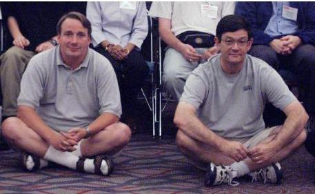

The 2003 Kernel Developers Summit
[Reporting by LWN.net Executive Editor Jonathan Corbet]
The 2003 Kernel Developers summit was held July 21 and 22 in Ottawa, immediately before the Ottawa Linux Symposium. Nearly 70 developers attended the invitation-only event and discussed numerous topics relevant to the ongoing development of the Linux kernel. LWN editor Jonathan Corbet was there, and has documented most of the sessions below.
Monday sessions
- The requirements panel; a six-member
panel representing large Linux vendors and users discussed their
wishes for future Linux kernel developments.
- High availability; a session led
by Lars Marowsky-Brée on what Linux needs to better support
high-availability applications.
- Workload management, led by
Ken Rosendal.
- NUMA management, led by Andi Kleen.
- Error and event logging, a session
led by Suparna Bhattacharya.
- I/O clustering; Gerrit Huizenga ran
a session on improving file write performance.
- ACPI and power management, a discussion
of power issues, hardware management, and sysfs led by Andrew Grover
and Pat Mochel.
- Greg Kroah-Hartman discussed his udev utility as a way of replacing
devfs. LWN covered udev back in April,
and it has changed little since. About the only news was the
announcement that a persistent device naming and permissions scheme is
in the works and will be added soon.
- Five-minute brainstorming; a free-form session where kernel developers could quickly present ideas or concerns. This session ended with Linus talking a bit about the 2.6.0 release and the eventual 2.7 fork.

Tuesday sessions
Tuesday's sessions included:- The Processor Architects' Panel brought
together processor designers from three manufacturers to talk about
where their product lines are going and implications for the Linux
kernel.
- Transparent superpages and page
clustering, discussions led by Dave Mosberger and William Irwin.
- Reverse-mapping VM performance, a
session led by Rik van Riel.
- Martin Bligh ran a session on various VM
topics.
- Asynchronous I/O, run by Suparna
Bhattacharya.
- James Bottomley celebrated his birthday with this session on the SCSI subsystem.
- Multipath I/O; this session run
by Mike Anderson and Lars Marowsky-Brée looked mostly at problems
with current Linux multipath implementations and the desired features
for a new implementation.
- The closing session of the summit was a discussion of what went well (or not) with the 2.5 development series, along with a look forward to how 2.6 will work.
The traditional kernel summit group photo is
also available.
| Index entries for this article | |
|---|---|
| Kernel | Kernel Summit |
| Conference | Kernel Summit/2003 |
Posted Jul 22, 2003 5:21 UTC (Tue)
by pj (subscriber, #4506)
[Link] (1 responses)
Posted Jul 24, 2003 1:01 UTC (Thu)
by robot101 (subscriber, #3479)
[Link]
Posted Jul 22, 2003 6:04 UTC (Tue)
by mmarkov (guest, #4978)
[Link]
Posted Jul 22, 2003 14:24 UTC (Tue)
by hjweth (guest, #1365)
[Link] (2 responses)
Posted Jul 22, 2003 14:38 UTC (Tue)
by dwalters (guest, #4207)
[Link] (1 responses)
In all seriousness, though, why isn't SCO on the agenda at this summit? I'm sure SCO's actions weighs very heavily on the minds of most of the kernel developers who will be attending the summit, and if the kernel developers put their collective brains (and copyrights) behind it, I'm sure they could come up with some effective counter-attack.
Posted Jul 22, 2003 17:22 UTC (Tue)
by JoeBuck (subscriber, #2330)
[Link]
This is the technical summit, not the legal/business issues summit. Still, I'm sure that there will be lots of quiet conversations about what to do. It might be best if the kernel copyright holders empower Linux International (or some other body) to deal with the legal issues, just as Linus has done for trademark enforcement.
At some point, some body with official standing is going to need to contest the issue in the press, and possibly issue official announcements, for example, that SCO is in breach of the GPL and the Linux copyright holders are invoking clause 4, and threaten similar action against anyone who publicly pressures anyone to obtain an SCO license in order to "legally" run Linux (as such pressures are an attempt to sublicense a GPLed work). The kernel developers should be insulated from this ugliness, but we can't let SCO go around extorting licenses from people without objecting.
Posted Jul 23, 2003 16:04 UTC (Wed)
by Quazatron (guest, #4368)
[Link] (2 responses)
What's the deal with the sandals and white socks? I know kernel developers are supposed to be informal people, but come on!
Posted Jul 24, 2003 7:29 UTC (Thu)
by tekNico (guest, #22)
[Link]
Go away. ;^P
Posted Jul 31, 2003 19:55 UTC (Thu)
by mmarq (guest, #2332)
[Link]
Posted Aug 3, 2003 10:11 UTC (Sun)
by yann (guest, #13611)
[Link] (1 responses)
Posted Aug 3, 2003 13:06 UTC (Sun)
by corbet (editor, #1)
[Link]
We're not running any ads from SCO. We are running ads from Google, and
some of those ads are from SCO resellers. Google provides a primitive
filtering capability which I've been using to get rid of some of them, but
it's hard to catch them all. New ones tend to pop up over time.
Thanks! Thanks to LWN and Mr. Corbet especially for covering this! I'm mostly a novice at kernel programming, but I really enjoy hearing what issues are being discussed among the people doing the lion's share of the work.
The 2003 Kernel Developers Summit
Yeah, just read the lot. Very impressive, very cool to see what's going on and what's planned. Great coverage, thanks!
The 2003 Kernel Developers Summit
Is there any site with pictures orThe 2003 Kernel Developers Summit
even better, audio/video recordings
of the meetings? Assuming such
exist, of course :)
None of this would be possible without SCO, which has provided all the participants with scripts (with pronunciation guides), so they can sound like they know about all these complicated teknology.
Let's not forget
LOL! Let's not forget
Let's not forget
What I don't get is this:The 2003 Kernel Developers Summit
Get some style, please, people! ;-)
> Get some style, please, people! ;-)The 2003 Kernel Developers Summit
Dont worry!... Linus & Company dont code whit their feet.
The 2003 Kernel Developers Summit
Hi, First stop ads for SCO / Caldera / Xenix / etc. !
It would be best to be quite consistent. So first stopping ads from SCO / Caldera /
Xenix /etc. seems right to me.
Well, I think that advertising and editorial policy should be separate from
each other. But...
First stop ads for SCO / Caldera / Xenix / etc. !